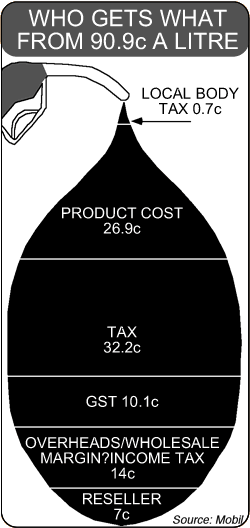

Pictographs
2- and 3-dimensional pictures should not replace the bars on a bar chart since the categories with the biggest pictures appear disproportionately large. A similar problem often arises when a picture is split into segments to form a stacked bar chart.
Avoid slicing a picture to form a stacked bar chart.
The following pictograph is a particularly misleading example — it exaggerates the proportion of tax and GST.
